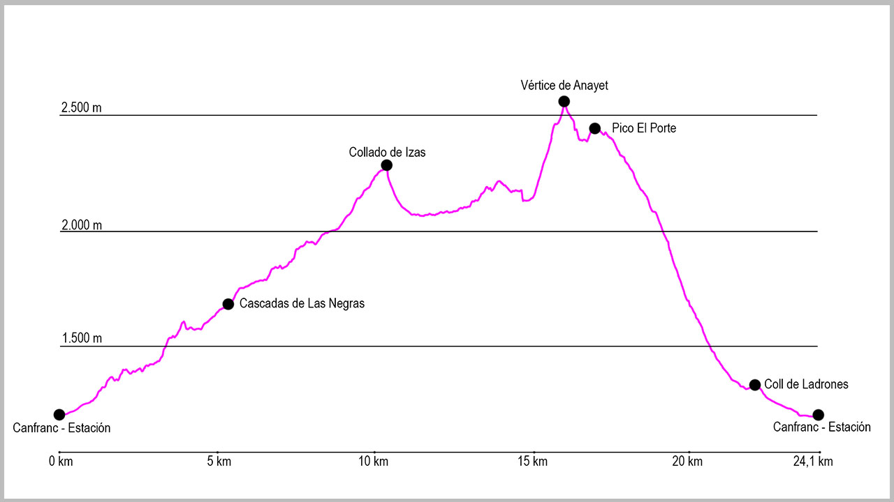

Desde el puente de la Estación de Canfranc, cogeremos la calle principal en dirección norte. Al llegar al final del pueblo seguiremos por el arcén derecho, y justo al pasar la boca española del Túnel de Somport sale un pequeño camino que va paralelo a la carrera. Lo tomaremos y, a escasos 200 metros, llegaremos a un primer puente que cruza el río Aragón y desde donde sale la pista que tomaremos en la parte inicial de la ruta. Una vez estemos en ella, no deberemos dejarla hasta el final de la misma. Varios cruces saldrán a nuestra derecha (Melancólicos o Casita Blanca), pero nosotros la seguiremos. Tras una primera curva de 180ª, la pista va cogiendo altura para llegar a una zona ya sin apenas bosque. Aquí volverá a hacer otras dos curvas de herradura para llevarnos a partir de este punto a dar vista a Coll de Ladrones.
Una vez llegados al fuerte, seguiremos la pista. Primero desciendo unos metros en dirección este, para poco después llegar a un cruce, que tomaremos a nuestra derecha de manera claramente ascendente. Este sendero es el que nos llevará hasta el punto de retorno de nuestra ruta.
Desde este punto vamos a recorrer tanto en la ida como en la vuelta el valle de Izas desde su final hasta la cabecera. El principio es algo incómodo, con varias zonas de subidas y bajadas antes de llegar a una pedrera que sortearemos sin mucha dificultad si no está mojada. En ella ganaremos rápidamente altura hasta llegar a donde se abre el valle. En estas campas seguiremos el camino marcado para atravesarlas. Al final de ellas los pies nos llevan a una senda bien marcada a nuestra izquierda, pero será muy importante seguir rectos. Si seguimos el camino, nos llevará enseguida al refugio de Iserias.
Justo al pasar el refugio, descenderemos brevemente hacia el cauce del río para llegar a un pequeño puente que cruzaremos para pasar a la margen derecha. Desde allí un antiguo camino nos conducirá en dirección este a remontar poco a poco el valle. Aunque el camino no está claro, si seguimos la margen y la dirección, no tendremos problema en llegar hasta el collado.
Volveremos a pasar por otro refugio de pastores, y poco después por una zona de piedras desde donde ya veremos nuestro objetivo, marcado con un reenvío de un telesquí de la estación de esquí de Formigal. Una vez en este punto solo nos quedará dibujar una media luna a nuestra izquierda en dirección al collado.
Una vez en el collado volveremos a bajar la primera parte por donde hemos subido para esta vez dejar el barranco a nuestra izquierda y quedarnos en una pequeña turbera debajo del pico Royo. Desde este punto seguiremos por la ladera manteniendo altura y encontraremos un antiguo camino bastante ancho y que no conducirá en dirección este hacia el inicio del valle.
Aproximadamente cuando llevemos un kilómetro de este camino nos encontraremos con una pared de piedra. Para sortearla, simplemente ganaremos un poco de altura en la ladera y esto nos permitirá rodearla por su derecha cómodamente. Desde aquí volveremos a coger la senda y esta nos conducirá hasta la base del Vértice de Anayet. En este momento se pierde cualquier camino, pero cogiendo de guía el collado a la derecha del pico, podemos establecer una línea que nos lleve hasta él. Al llegar al collado giraremos a nuestra izquierda para afrontar las últimas rampas y llegar a la cima.
Desde el pico comenzará nuestra bajada en dirección oeste. En muchos tramos no dispondremos de un claro sendero, pero la orientación en esta bajada es fácil. La primera parte será por la cresta que continúa de la subida en dirección suroeste. Tendremos que tener cuidado ya que alguna zona tiene alguna piedra que resbala. Llegaremos por la misma hasta un collado muy marcado en el que seguiremos recto por la divisoria entre Canal Roya e Izas, subiendo un pequeño e intenso repecho hasta la cima del pico Porte. Una vez en ella seguiremos en dirección sur por la cresta. El camino no está muy claro, pero los hitos y si seguimos todo el cordal, poco a poco descenderemos.
Atravesaremos varias campas de hierba, y cuando lleguemos cerca de los 1.900 metros estaremos en el collado de Chiniprés. Aquí giraremos a nuestra izquierda y divisaremos una pequeña caseta. Este primer tramo de descenso hasta ella no tendremos camino, así que usándola de referencia bajaremos entre la hierba.
Cuando lleguemos al refugio de las Menorias encontraremos a nuestra izquierda el sendero que nos llevará hasta el barranco de Izas. Justo antes de llegar nos encontraremos una bifurcación que cogeremos a nuestra izquierda para poco después llegar al puente que nos permitirá cruzar el barranco.
Una vez en la pista la cogeremos para llegar hasta Coll de Ladrones y después de pasarlo emprender el camino que nos llevará de vuelta hasta Canfranc-Estación.
